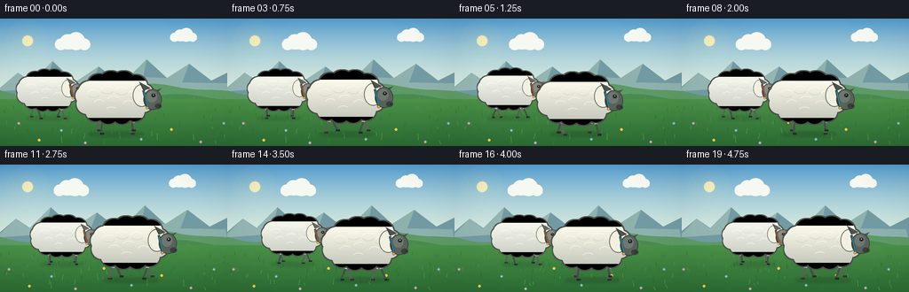
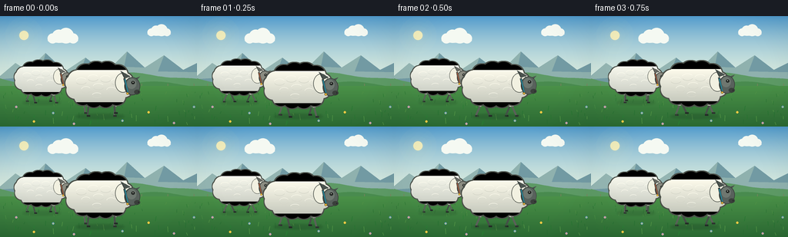
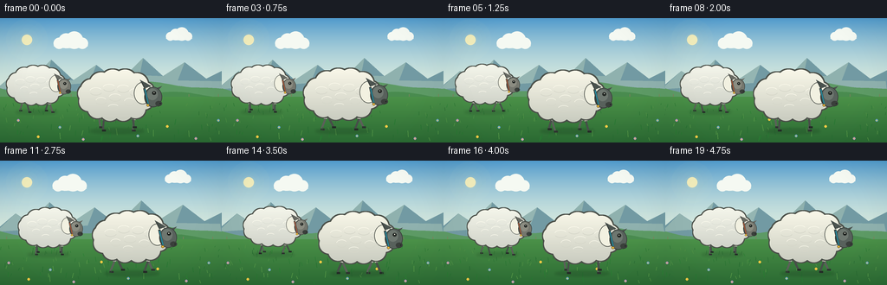
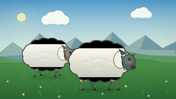
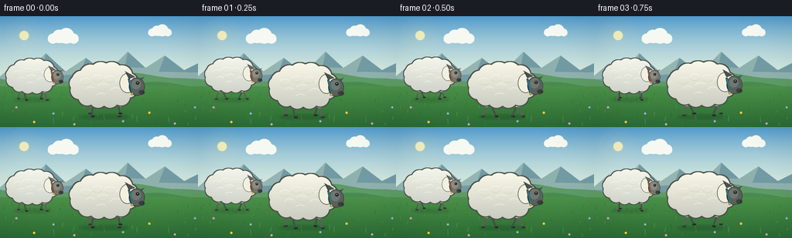

CODING AGENTS AS PIXEL WORLD MODELS
traex/GPT-5.6-Sol · instance_preservation_0016
点击播放 · 原生 RGB 像素
逐轮保存的候选
回放视频、检查图与代码变化。
每份候选均可单独播放。实际图片检查记录在下方工具轨迹中。
候选 01播放与检查图
点击播放 · 原生 RGB 像素


展开代码变化
--- 上一保存版本
+++ 本次保存版本
@@ -0,0 +1,297 @@
+from pathlib import Path
+import json, math
+import numpy as np
+from PIL import Image, ImageDraw, ImageFilter
+import artifact_io
+
+CASE_DIR = Path(__file__).resolve().parent
+SPEC = json.loads((CASE_DIR / 'task_spec.json').read_text())
+W, H = SPEC['width'], SPEC['height']
+N, FPS = SPEC['frames'], SPEC['fps']
+SS = 4
+SW, SH = W * SS, H * SS
+
+
+def sc(v):
+ return int(round(v * SS))
+
+
+def box(x0, y0, x1, y1):
+ return (sc(x0), sc(y0), sc(x1), sc(y1))
+
+
+def pts(seq):
+ return [(sc(x), sc(y)) for x, y in seq]
+
+
+def ellipse(draw, b, fill, outline=None, width=1):
+ draw.ellipse(box(*b), fill=fill, outline=outline, width=max(1, sc(width)))
+
+
+def polygon(draw, p, fill):
+ draw.polygon(pts(p), fill=fill)
+
+
+def line(draw, p, fill, width=1, joint='curve'):
+ draw.line(pts(p), fill=fill, width=max(1, sc(width)), joint=joint)
+
+
+def make_background(frame_i):
+ # Sky gradient, warm near the horizon.
+ arr = np.zeros((SH, SW, 3), dtype=np.uint8)
+ top = np.array([80, 154, 204], dtype=float)
+ horizon = np.array([222, 238, 224], dtype=float)
+ for yy in range(SH):
+ y = yy / SS
+ q = min(1.0, y / 101.0)
+ q = q * (2 - q)
+ arr[yy, :, :] = top * (1-q) + horizon * q
+ im = Image.fromarray(arr, 'RGB')
+ d = ImageDraw.Draw(im)
+ pan = frame_i * 1.08
+
+ # Soft sun and atmospheric glow.
+ glow = Image.new('RGBA', (SW, SH), (0, 0, 0, 0))
+ gd = ImageDraw.Draw(glow)
+ for r, a in [(24, 7), (18, 10), (13, 15), (8, 28)]:
+ ellipse(gd, (31-r, 25-r, 31+r, 25+r), (255, 238, 170, a))
+ ellipse(gd, (25, 19, 37, 31), (255, 242, 184, 225))
+ im = Image.alpha_composite(im.convert('RGBA'), glow).convert('RGB')
+ d = ImageDraw.Draw(im)
+
+ # High soft clouds, moving only slightly with parallax.
+ cloud_dx = pan * 0.12
+ def cloud(cx, cy, scale):
+ col = (245, 249, 242)
+ shade = (221, 235, 231)
+ ellipse(d, (cx-28*scale-cloud_dx, cy, cx+27*scale-cloud_dx, cy+8*scale), shade)
+ for ox, oy, rr in [(-19,0,9),(-8,-4,12),(5,-5,14),(18,0,9)]:
+ ellipse(d, (cx+(ox-rr)*scale-cloud_dx, cy+(oy-rr)*scale,
+ cx+(ox+rr)*scale-cloud_dx, cy+(oy+rr)*scale), col)
+ cloud(82, 29, .72)
+ cloud(207, 21, .55)
+
+ # Distant mountain chain.
+ far = [(0,78),(20,61),(36,72),(59,48),(85,72),(111,54),(137,74),
+ (165,46),(188,67),(213,51),(238,70),(270,54),(280,89),(0,89)]
+ far = [(x-pan*.17, y) for x,y in far]
+ polygon(d, far, (114, 154, 163))
+ # Sun-facing ridges.
+ ridge = [(20-pan*.17,61),(35-pan*.17,72),(59-pan*.17,48),(54-pan*.17,68),
+ (84-pan*.17,72),(111-pan*.17,54),(103-pan*.17,75),(0,82),(0,78)]
+ polygon(d, ridge, (148, 181, 178))
+ ridge2 = [(137-pan*.17,74),(165-pan*.17,46),(161-pan*.17,66),(188-pan*.17,67),
+ (213-pan*.17,51),(205-pan*.17,72),(256-pan*.17,73),(256,88),(120,88)]
+ polygon(d, ridge2, (143, 177, 174))
+
+ # Rolling hills with simple painterly edge layers.
+ hill_back = [(x, 81 + 6*math.sin((x+pan*.25)/38) + 2*math.sin(x/15)) for x in range(-30, 301, 5)]
+ hill_back += [(300,125),(-30,125)]
+ polygon(d, hill_back, (93, 154, 101))
+ hill_mid = [(x, 94 + 7*math.sin((x+25+pan*.5)/49) + 2*math.sin(x/18)) for x in range(-30, 301, 5)]
+ hill_mid += [(300,144),(-30,144)]
+ polygon(d, hill_mid, (73, 139, 79))
+
+ # A small distant fence emphasizes lateral movement and depth.
+ fence_col = (126, 127, 92)
+ ybase = 97
+ for wx in range(-20, 330, 34):
+ x = wx - pan*.55
+ line(d, [(x,ybase-9),(x,ybase+5)], fence_col, .8)
+ line(d, [(-20-pan*.55,ybase-5),(330-pan*.55,ybase-2)], fence_col, .65)
+
+ # Foreground pasture gradient.
+ fg = np.zeros((SH, SW, 4), dtype=np.uint8)
+ for yy in range(sc(91), SH):
+ y = yy / SS
+ q = min(1, max(0, (y-91)/(H-91)))
+ c = np.array([75,145,72])*(1-q)+np.array([42,105,50])*q
+ fg[yy,:,0:3] = c
+ fg[yy,:,3] = 255
+ fgim = Image.fromarray(fg, 'RGBA')
+ im = Image.alpha_composite(im.convert('RGBA'), fgim).convert('RGB')
+ d = ImageDraw.Draw(im)
+
+ # Deterministic grass, seed heads, and tiny meadow flowers in depth layers.
+ rng = np.random.default_rng(4821)
+ for k in range(112):
+ wx = rng.uniform(-35, 320)
+ y = rng.uniform(100, 143)
+ x = wx - pan * (0.45 + (y-100)/74)
+ if -4 < x < W+4:
+ height = rng.uniform(2.0, 6.0) * (0.55 + (y-98)/48)
+ col = (39,104+int(rng.uniform(0,25)),49) if k%3 else (81,146,68)
+ bend = rng.uniform(-1.5,1.5)
+ line(d, [(x,y),(x+bend,y-height)], col, .45 if y<122 else .65)
+ # Small flower clusters; the two sheep remain the only large white objects.
+ flowers = [(-5,130,'yellow'),(21,119,'lav'),(44,138,'yellow'),(69,127,'blue'),
+ (96,141,'lav'),(128,118,'yellow'),(159,137,'blue'),(193,126,'yellow'),
+ (226,140,'lav'),(252,119,'blue'),(281,133,'yellow'),(310,124,'lav')]
+ colors = {'yellow':(242,198,62),'lav':(176,142,201),'blue':(100,164,204)}
+ for wx,y,cname in flowers:
+ x = wx - pan*.93
+ if -4<x<W+4:
+ line(d, [(x,y+3),(x,y-1)], (46,106,49), .6)
+ col=colors[cname]
+ ellipse(d,(x-1.5,y-2.2,x+1.5,y+.8),col)
+ ellipse(d,(x-.6,y-1.2,x+.6,y), (239,210,82))
+ return im
+
+
+def draw_ground_shadow(im, x, ground, sx, width, alpha=65):
+ layer = Image.new('RGBA', (SW,SH), (0,0,0,0))
+ ld = ImageDraw.Draw(layer)
+ ellipse(ld, (x-width*sx, ground-2.0, x+width*sx, ground+3.2), (28,64,37,alpha))
+ layer = layer.filter(ImageFilter.GaussianBlur(sc(1.4)))
+ return Image.alpha_composite(im.convert('RGBA'), layer).convert('RGB')
+
+
+def draw_sheep(im, cx, ground, scale, phase, identity, depth=0):
+ # Coherent side-profile sheep, assembled in stable local coordinates.
+ bob = 1.15 * math.sin(phase*2 + identity*.45)
+ head_nod = .7 * math.sin(phase*2 + .7)
+ def P(lx,ly):
+ return (cx + lx*scale, ground + (ly+bob)*scale)
+
+ im = draw_ground_shadow(im, cx, ground, scale, 31, 50 if depth else 72)
+ d = ImageDraw.Draw(im)
+
+ # Tail behind fleece.
+ tx,ty=P(-37,-42)
+ tail_col=(226,225,208) if identity==0 else (234,231,214)
+ polygon(d, [P(-34,-47),P(-45,-43),P(-42,-36),P(-33,-36)], tail_col)
+ line(d,[P(-42,-42),P(-35,-40)],(101,103,91),.8*scale)
+
+ # Leg gait: diagonal pairs alternate. Far legs are muted and drawn first.
+ legs = [(-19, phase+math.pi, True), (18, phase, True),
+ (-16, phase, False), (19, phase+math.pi, False)]
+ for hip,th,far in legs:
+ stride=7.0
+ footx=hip + stride*math.sin(th)
+ lift=3.6*max(0.0, -math.cos(th))
+ kneex=hip + 2.3*math.sin(th+.45)
+ kneey=-12.0-lift*.24
+ footy=-lift
+ wool=(196,198,187) if far else (239,236,218)
+ skin=(91,96,89) if far else (71,78,73)
+ hoof=(45,51,47) if far else (35,42,38)
+ # Soft woolly upper leg and slimmer lower leg.
+ line(d,[P(hip,-27),P(kneex,kneey)],(91,96,87),4.7*scale)
+ line(d,[P(hip,-27),P(kneex,kneey)],wool,3.4*scale)
+ line(d,[P(kneex,kneey),P(footx,footy-1)],skin,2.3*scale)
+ line(d,[P(footx-1,footy),P(footx+3.2,footy)],hoof,2.2*scale)
+
+ # Build one continuous scalloped fleece silhouette mask.
+ mask=Image.new('L',(SW,SH),0)
+ md=ImageDraw.Draw(mask)
+ def mell(lx0,ly0,lx1,ly1,fill=255):
+ x0,y0=P(lx0,ly0); x1,y1=P(lx1,ly1)
+ md.ellipse(box(x0,y0,x1,y1),fill=fill)
+ mell(-35,-52,35,-19)
+ lobes=[(-29,-46,12),(-18,-53,13),(-5,-56,13),(9,-56,13),(22,-52,13),
+ (31,-44,11),(31,-34,10),(21,-25,11),(7,-22,11),(-8,-22,11),
+ (-22,-25,11),(-32,-33,11),(-34,-42,10)]
+ for lx,ly,r in lobes:
+ mell(lx-r,ly-r,lx+r,ly+r)
+ # Fine dark boundary around the whole fleece, not around individual lobes.
+ filt=max(3, int(round(2.5*SS*scale))|1)
+ grown=mask.filter(ImageFilter.MaxFilter(filt))
+ outline=np.maximum(np.asarray(grown,dtype=np.int16)-np.asarray(mask,dtype=np.int16),0).astype(np.uint8)
+ outline_im=Image.new('RGB',(SW,SH),(75,80,73))
+ im.paste(outline_im,(0,0),Image.fromarray(outline,'L'))
+
+ # Warm white shaded wool clipped to the stable body mask.
+ woolarr=np.zeros((SH,SW,3),dtype=np.uint8)
+ top=np.array([252,250,235],float) if identity==0 else np.array([247,248,237],float)
+ bot=np.array([199,202,190],float) if identity==0 else np.array([207,210,200],float)
+ body_top=ground+(-58+bob)*scale
+ body_bot=ground+(-18+bob)*scale
+ for yy in range(max(0,int(body_top*SS)-2), min(SH,int(body_bot*SS)+3)):
+ q=np.clip((yy/SS-body_top)/(body_bot-body_top),0,1)
+ c=top*(1-q)+bot*q
+ woolarr[yy,:,:]=c
+ woolim=Image.fromarray(woolarr,'RGB')
+ im.paste(woolim,(0,0),mask)
+ d=ImageDraw.Draw(im)
+
+ # Sparse crescent curls imply dense wool without flicker.
+ curls=[(-24,-44,7,4),(-9,-48,7,4),(7,-47,7,4),(21,-43,7,4),
+ (-18,-33,6,4),(-2,-37,7,4),(14,-32,6,4),(27,-35,5,3),(-4,-26,6,3)]
+ curlcol=(213,214,201) if identity==0 else (217,220,210)
+ hi=(255,253,239)
+ for lx,ly,rx,ry in curls:
+ x,y=P(lx,ly)
+ d.arc(box(x-rx*scale,y-ry*scale,x+rx*scale,y+ry*scale),20,155,fill=curlcol,width=max(1,sc(.65*scale)))
+ d.arc(box(x-rx*scale,y-ry*scale-.7,x+rx*scale,y+ry*scale-.7),190,330,fill=hi,width=max(1,sc(.55*scale)))
+
+ # Woolly neck joins face seamlessly.
+ nx,ny=P(29,-42)
+ ellipse(d,(nx-10*scale,ny-13*scale,nx+10*scale,ny+12*scale),(240,240,224),(76,80,74),.75*scale)
+ ellipse(d,(nx-8.3*scale,ny-11.2*scale,nx+8.5*scale,ny+10.3*scale),(242,241,225))
+
+ # Ears, face, muzzle. Identity is retained by face tone and collar/tag color.
+ face=(88,97,92) if identity==0 else (117,119,110)
+ face_hi=(110,119,112) if identity==0 else (139,140,129)
+ ear=(75,83,79) if identity==0 else (103,105,98)
+ # Back ear rises above the crown.
+ polygon(d,[P(31,-48+head_nod),P(26,-58+head_nod),P(39,-51+head_nod)],ear)
+ line(d,[P(31,-49+head_nod),P(28,-56+head_nod)],(51,57,54),.7*scale)
+ # Forward ear points toward travel direction.
+ polygon(d,[P(40,-47+head_nod),P(51,-51+head_nod),P(43,-42+head_nod)],ear)
+ # Face outline and inner highlight.
+ fx0,fy0=P(31,-50+head_nod); fx1,fy1=P(51,-27+head_nod)
+ ellipse(d,(fx0,fy0,fx1,fy1),(55,61,57))
+ ellipse(d,(fx0+.9*scale,fy0+.8*scale,fx1-.7*scale,fy1-.8*scale),face)
+ ellipse(d,(fx0+3*scale,fy0+2*scale,fx1-5*scale,fy1-8*scale),face_hi)
+ # Dark muzzle and nostril.
+ mx,my=P(47,-31+head_nod)
+ ellipse(d,(mx-3.7*scale,my-3.0*scale,mx+4.1*scale,my+2.8*scale),(58,63,59))
+ ellipse(d,(mx+1.4*scale,my-.7*scale,mx+2.4*scale,my+.3*scale),(25,30,28))
+ line(d,[P(49,-29+head_nod),P(46,-27.5+head_nod)],(38,43,40),.55*scale)
+ # Alert eye with catchlight.
+ ex,ey=P(42,-43+head_nod)
+ ellipse(d,(ex-2.2*scale,ey-2.0*scale,ex+2.2*scale,ey+2.0*scale),(34,38,35))
+ ellipse(d,(ex-.55*scale,ey-.9*scale,ex+.35*scale,ey), (248,248,232))
+
+ # Small stable collar identity cue (both still unmistakably white sheep).
+ collar=(40,132,150) if identity==0 else (166,91,61)
+ line(d,[P(31,-48),P(35,-30)],(52,61,59),2.7*scale)
+ line(d,[P(31.3,-47),P(35.2,-30.5)],collar,1.45*scale)
+ tagx,tagy=P(35,-30)
+ ellipse(d,(tagx-1.6*scale,tagy-.2*scale,tagx+1.6*scale,tagy+2.8*scale),(226,179,61),(104,82,35),.45*scale)
+
+ # A few sharply rendered foreground grass tips overlap hooves, anchoring contact.
+ d=ImageDraw.Draw(im)
+ for off,h in [(-24,4),(-5,3.5),(12,4.5),(28,3)]:
+ line(d,[(cx+off*scale,ground+1),(cx+(off+1.2)*scale,ground-h)],(42,105,48),.55)
+ return im
+
+
+def render_frame(i):
+ im=make_background(i)
+ # Eight-frame gait cycle; sheep are offset so their steps do not mirror mechanically.
+ phase=2*math.pi*i/8.0
+ # Rear sheep: smaller due to depth, always spatially separate and visible.
+ rear_x=54 + 1.42*i
+ im=draw_sheep(im,rear_x,112,.80,phase+.85,1,depth=1)
+ # Foreground sheep leads, larger with turquoise collar.
+ front_x=130 + 1.55*i
+ im=draw_sheep(im,front_x,130,1.02,phase,0,depth=0)
+ # A subtle foreground vignette focuses attention without obscuring motion.
+ vign=np.zeros((SH,SW,4),dtype=np.uint8)
+ yy,xx=np.mgrid[0:SH,0:SW]
+ nx=(xx-SW/2)/(SW/2); ny=(yy-SH*.48)/(SH*.70)
+ a=np.clip((nx*nx+ny*ny-.52)*16,0,18).astype(np.uint8)
+ vign[:,:,3]=a
+ vign[:,:,:3]=np.array([15,34,27],dtype=np.uint8)
+ im=Image.alpha_composite(im.convert('RGBA'),Image.fromarray(vign,'RGBA')).convert('RGB')
+ return np.asarray(im.resize((W,H),Image.Resampling.LANCZOS),dtype=np.uint8)
+
+
+def main():
+ frames=np.stack([render_frame(i) for i in range(N)],axis=0)
+ artifact_io.save(frames,CASE_DIR)
+ print(f'saved {frames.shape} {frames.dtype} to {CASE_DIR}')
+
+if __name__=='__main__':
+ main()
候选 02播放与检查图
点击播放 · 原生 RGB 像素

展开代码变化
--- 上一保存版本
+++ 本次保存版本
@@ -204,8 +204,11 @@
woolarr=np.zeros((SH,SW,3),dtype=np.uint8)
top=np.array([252,250,235],float) if identity==0 else np.array([247,248,237],float)
bot=np.array([199,202,190],float) if identity==0 else np.array([207,210,200],float)
- body_top=ground+(-58+bob)*scale
- body_bot=ground+(-18+bob)*scale
+ # Include the complete scalloped crown and belly in the shade field. The
+ # mask itself provides the exact silhouette; this wider vertical interval
+ # prevents unpainted pixels at the outermost curls.
+ body_top=ground+(-72+bob)*scale
+ body_bot=ground+(-9+bob)*scale
for yy in range(max(0,int(body_top*SS)-2), min(SH,int(body_bot*SS)+3)):
q=np.clip((yy/SS-body_top)/(body_bot-body_top),0,1)
c=top*(1-q)+bot*q
@@ -272,10 +275,10 @@
# Eight-frame gait cycle; sheep are offset so their steps do not mirror mechanically.
phase=2*math.pi*i/8.0
# Rear sheep: smaller due to depth, always spatially separate and visible.
- rear_x=54 + 1.42*i
- im=draw_sheep(im,rear_x,112,.80,phase+.85,1,depth=1)
+ rear_x=42 + 1.25*i
+ im=draw_sheep(im,rear_x,108,.78,phase+.85,1,depth=1)
# Foreground sheep leads, larger with turquoise collar.
- front_x=130 + 1.55*i
+ front_x=135 + 1.55*i
im=draw_sheep(im,front_x,130,1.02,phase,0,depth=0)
# A subtle foreground vignette focuses attention without obscuring motion.
vign=np.zeros((SH,SW,4),dtype=np.uint8)
可观测工具轨迹
实际执行的命令与返回图片。
命令 1exit 0
/bin/bash -lc "ls -la && printf '\\n--- prompt.txt ---\\n' && cat prompt.txt && printf '\\n--- GENERATION_RULES.md ---\\n' && cat GENERATION_RULES.md && printf '\\n--- task_spec.json ---\\n' && cat task_spec.json"
命令 2exit 0
/bin/bash -lc "find . -maxdepth 3 -type f -printf '%p\\n' | sort | head -300; printf '\\n--- binaries ---\\n'; command -v ffmpeg || true; command -v python3 || true; command -v blender || true; command -v convert || true"
命令 3exit 0
/bin/bash -lc "sed -n '1,260p' artifact_io.py && printf '\\n--- python packages ---\\n' && python3 - <<'PY' mods=['numpy','PIL','imageio','cv2'] for m in mods: try: x=__import__(m); print(m, getattr(x,'__version__','ok')) except Exception as e: print(m,'NO',e) PY"
命令 4exit 0
/bin/bash -lc "cat > generate.py <<'PY'
from pathlib import Path
import json, math
import numpy as np
from PIL import Image, ImageDraw, ImageFilter
import artifact_io
CASE_DIR = Path(__file__).resolve().parent
SPEC = json.loads((CASE_DIR / 'task_spec.json').read_text())
W, H = SPEC['width'], SPEC['height']
N, FPS = SPEC['frames'], SPEC['fps']
SS = 4
SW, SH = W * SS, H * SS
def sc(v):
return int(round(v * SS))
def box(x0, y0, x1, y1):
return (sc(x0), sc(y0), sc(x1), sc(y1))
def pts(seq):
return [(sc(x), sc(y)) for x, y in seq]
def ellipse(draw, b, fill, outline=None, width=1):
draw.ellipse(box(*b), fill=fill, outline=outline, width=max(1, sc(width)))
def polygon(draw, p, fill):
draw.polygon(pts(p), fill=fill)
def line(draw, p, fill, width=1, joint='curve'):
draw.line(pts(p), fill=fill, width=max(1, sc(width)), joint=joint)
def make_background(frame_i):
# Sky gradient, warm near the horizon.
arr = np.zeros((SH, SW, 3), dtype=np.uint8)
top = np.array([80, 154, 204], dtype=float)
horizon = np.array([222, 238, 224], dtype=float)
for yy in range(SH):
y = yy / SS
q = min(1.0, y / 101.0)
q = q * (2 - q)
arr[yy, :, :] = top * (1-q) + horizon * q
im = Image.fromarray(arr, 'RGB')
d = ImageDraw.Draw(im)
pan = frame_i * 1.08
# Soft sun and atmospheric glow.
glow = Image.new('RGBA', (SW, SH), (0, 0, 0, 0))
gd = ImageDraw.Draw(glow)
for r, a in [(24, 7), (18, 10), (13, 15), (8, 28)]:
ellipse(gd, (31-r, 25-r, 31+r, 25+r), (255, 238, 170, a))
ellipse(gd, (25, 19, 37, 31), (255, 242, 184, 225))
im = Image.alpha_composite(im.convert('RGBA'), glow).convert('RGB')
d = ImageDraw.Draw(im)
# High soft clouds, moving only slightly with parallax.
cloud_dx = pan * 0.12
def cloud(cx, cy, scale):
col = (245, 249, 242)
shade = (221, 235, 231)
ellipse(d, (cx-28*scale-cloud_dx, cy, cx+27*scale-cloud_dx, cy+8*scale), shade)
for ox, oy, rr in [(-19,0,9),(-8,-4,12),(5,-5,14),(18,0,9)]:
ellipse(d, (cx+(ox-rr)*scale-cloud_dx, cy+(oy-rr)*scale,
cx+(ox+rr)*scale-cloud_dx, cy+(oy+rr)*scale), col)
cloud(82, 29, .72)
cloud(207, 21, .55)
# Distant mountain chain.
far = [(0,78),(20,61),(36,72),(59,48),(85,72),(111,54),(137,74),
(165,46),(188,67),(213,51),(238,70),(270,54),(280,89),(0,89)]
far = [(x-pan*.17, y) for x,y in far]
polygon(d, far, (114, 154, 163))
# Sun-facing ridges.
ridge = [(20-pan*.17,61),(35-pan*.17,72),(59-pan*.17,48),(54-pan*.17,68),
(84-pan*.17,72),(111-pan*.17,54),(103-pan*.17,75),(0,82),(0,78)]
polygon(d, ridge, (148, 181, 178))
ridge2 = [(137-pan*.17,74),(165-pan*.17,46),(161-pan*.17,66),(188-pan*.17,67),
(213-pan*.17,51),(205-pan*.17,72),(256-pan*.17,73),(256,88),(120,88)]
polygon(d, ridge2, (143, 177, 174))
# Rolling hills with simple painterly edge layers.
hill_back = [(x, 81 + 6*math.sin((x+pan*.25)/38) + 2*math.sin(x/15)) for x in range(-30, 301, 5)]
hill_back += [(300,125),(-30,125)]
polygon(d, hill_back, (93, 154, 101))
hill_mid = [(x, 94 + 7*math.sin((x+25+pan*.5)/49) + 2*math.sin(x/18)) for x in range(-30, 301, 5)]
hill_mid += [(300,144),(-30,144)]
polygon(d, hill_mid, (73, 139, 79))
# A small distant fence emphasizes lateral movement and depth.
fence_col = (126, 127, 92)
ybase = 97
for wx in range(-20, 330, 34):
x = wx - pan*.55
line(d, [(x,ybase-9),(x,ybase+5)], fence_col, .8)
line(d, [(-20-pan*.55,ybase-5),(330-pan*.55,ybase-2)], fence_col, .65)
# Foreground pasture gradient.
fg = np.zeros((SH, SW, 4), dtype=np.uint8)
for yy in range(sc(91), SH):
y = yy / SS
q = min(1, max(0, (y-91)/(H-91)))
c = np.array([75,145,72])*(1-q)+np.array([42,105,50])*q
fg[yy,:,0:3] = c
fg[yy,:,3] = 255
fgim = Image.fromarray(fg, 'RGBA')
im = Image.alpha_composite(im.convert('RGBA'), fgim).convert('RGB')
d = ImageDraw.Draw(im)
# Deterministic grass, seed heads, and tiny meadow flowers in depth layers.
rng = np.random.default_rng(4821)
for k in range(112):
wx = rng.uniform(-35, 320)
y = rng.uniform(100, 143)
x = wx - pan * (0.45 + (y-100)/74)
if -4 < x < W+4:
height = rng.uniform(2.0, 6.0) * (0.55 + (y-98)/48)
col = (39,104+int(rng.uniform(0,25)),49) if k%3 else (81,146,68)
bend = rng.uniform(-1.5,1.5)
line(d, [(x,y),(x+bend,y-height)], col, .45 if y<122 else .65)
# Small flower clusters; the two sheep remain the only large white objects.
flowers = [(-5,130,'yellow'),(21,119,'lav'),(44,138,'yellow'),(69,127,'blue'),
(96,141,'lav'),(128,118,'yellow'),(159,137,'blue'),(193,126,'yellow'),
(226,140,'lav'),(252,119,'blue'),(281,133,'yellow'),(310,124,'lav')]
colors = {'yellow':(242,198,62),'lav':(176,142,201),'blue':(100,164,204)}
for wx,y,cname in flowers:
x = wx - pan*.93
if -4<x<W+4:
line(d, [(x,y+3),(x,y-1)], (46,106,49), .6)
col=colors[cname]
ellipse(d,(x-1.5,y-2.2,x+1.5,y+.8),col)
ellipse(d,(x-.6,y-1.2,x+.6,y), (239,210,82))
return im
def draw_ground_shadow(im, x, ground, sx, width, alpha=65):
layer = Image.new('RGBA', (SW,SH), (0,0,0,0))
ld = ImageDraw.Draw(layer)
ellipse(ld, (x-width*sx, ground-2.0, x+width*sx, ground+3.2), (28,64,37,alpha))
layer = layer.filter(ImageFilter.GaussianBlur(sc(1.4)))
return Image.alpha_composite(im.convert('RGBA'), layer).convert('RGB')
def draw_sheep(im, cx, ground, scale, phase, identity, depth=0):
# Coherent side-profile sheep, assembled in stable local coordinates.
bob = 1.15 * math.sin(phase*2 + identity*.45)
head_nod = .7 * math.sin(phase*2 + .7)
def P(lx,ly):
return (cx + lx*scale, ground + (ly+bob)*scale)
im = draw_ground_shadow(im, cx, ground, scale, 31, 50 if depth else 72)
d = ImageDraw.Draw(im)
# Tail behind fleece.
tx,ty=P(-37,-42)
tail_col=(226,225,208) if identity==0 else (234,231,214)
polygon(d, [P(-34,-47),P(-45,-43),P(-42,-36),P(-33,-36)], tail_col)
line(d,[P(-42,-42),P(-35,-40)],(101,103,91),.8*scale)
# Leg gait: diagonal pairs alternate. Far legs are muted and drawn first.
legs = [(-19, phase+math.pi, True), (18, phase, True),
(-16, phase, False), (19, phase+math.pi, False)]
for hip,th,far in legs:
stride=7.0
footx=hip + stride*math.sin(th)
lift=3.6*max(0.0, -math.cos(th))
kneex=hip + 2.3*math.sin(th+.45)
kneey=-12.0-lift*.24
footy=-lift
wool=(196,198,187) if far else (239,236,218)
skin=(91,96,89) if far else (71,78,73)
hoof=(45,51,47) if far else (35,42,38)
# Soft woolly upper leg and slimmer lower leg.
line(d,[P(hip,-27),P(kneex,kneey)],(91,96,87),4.7*scale)
line(d,[P(hip,-27),P(kneex,kneey)],wool,3.4*scale)
line(d,[P(kneex,kneey),P(footx,footy-1)],skin,2.3*scale)
line(d,[P(footx-1,footy),P(footx+3.2,footy)],hoof,2.2*scale)
# Build one continuous scalloped fleece silhouette mask.
mask=Image.new('L',(SW,SH),0)
md=ImageDraw.Draw(mask)
def mell(lx0,ly0,lx1,ly1,fill=255):
x0,y0=P(lx0,ly0); x1,y1=P(lx1,ly1)
md.ellipse(box(x0,y0,x1,y1),fill=fill)
mell(-35,-52,35,-19)
lobes=[(-29,-46,12),(-18,-53,13),(-5,-56,13),(9,-56,13),(22,-52,13),
(31,-44,11),(31,-34,10),(21,-25,11),(7,-22,11),(-8,-22,11),
(-22,-25,11),(-32,-33,11),(-34,-42,10)]
for lx,ly,r in lobes:
mell(lx-r,ly-r,lx+r,ly+r)
# Fine dark boundary around the whole fleece, not around individual lobes.
filt=max(3, int(round(2.5*SS*scale))|1)
grown=mask.filter(ImageFilter.MaxFilter(filt))
outline=np.maximum(np.asarray(grown,dtype=np.int16)-np.asarray(mask,dtype=np.int16),0).astype(np.uint8)
outline_im=Image.new('RGB',(SW,SH),(75,80,73))
im.paste(outline_im,(0,0),Image.fromarray(outline,'L'))
# Warm white shaded wool clipped to the stable body mask.
woolarr=np.zeros((SH,SW,3),dtype=np.uint8)
top=np.array([252,250,235],float) if identity==0 else np.array([247,248,237],float)
bot=np.array([199,202,190],float) if identity==0 else np.array([207,210,200],float)
body_top=ground+(-58+bob)*scale
body_bot=ground+(-18+bob)*scale
for yy in range(max(0,int(body_top*SS)-2), min(SH,int(body_bot*SS)+3)):
q=np.clip((yy/SS-body_top)/(body_bot-body_top),0,1)
c=top*(1-q)+bot*q
woolarr[yy,:,:]=c
woolim=Image.fromarray(woolarr,'RGB')
im.paste(woolim,(0,0),mask)
d=ImageDraw.Draw(im)
# Sparse crescent curls imply dense wool without flicker.
curls=[(-24,-44,7,4),(-9,-48,7,4),(7,-47,7,4),(21,-43,7,4),
(-18,-33,6,4),(-2,-37,7,4),(14,-32,6,4),(27,-35,5,3),(-4,-26,6,3)]
curlcol=(213,214,201) if identity==0 else (217,220,210)
hi=(255,253,239)
for lx,ly,rx,ry in curls:
x,y=P(lx,ly)
d.arc(box(x-rx*scale,y-ry*scale,x+rx*scale,y+ry*scale),20,155,fill=curlcol,width=max(1,sc(.65*scale)))
d.arc(box(x-rx*scale,y-ry*scale-.7,x+rx*scale,y+ry*scale-.7),190,330,fill=hi,width=max(1,sc(.55*scale)))
# Woolly neck joins face seamlessly.
nx,ny=P(29,-42)
ellipse(d,(nx-10*scale,ny-13*scale,nx+10*scale,ny+12*scale),(240,240,224),(76,80,74),.75*scale)
ellipse(d,(nx-8.3*scale,ny-11.2*scale,nx+8.5*scale,ny+10.3*scale),(242,241,225))
# Ears, face, muzzle. Identity is retained by face tone and collar/tag color.
face=(88,97,92) if identity==0 else (117,119,110)
face_hi=(110,119,112) if identity==0 else (139,140,129)
ear=(75,83,79) if identity==0 else (103,105,98)
# Back ear rises above the crown.
polygon(d,[P(31,-48+head_nod),P(26,-58+head_nod),P(39,-51+head_nod)],ear)
line(d,[P(31,-49+head_nod),P(28,-56+head_nod)],(51,57,54),.7*scale)
# Forward ear points toward travel direction.
polygon(d,[P(40,-47+head_nod),P(51,-51+head_nod),P(43,-42+head_nod)],ear)
# Face outline and inner highlight.
fx0,fy0=P(31,-50+head_nod); fx1,fy1=P(51,-27+head_nod)
ellipse(d,(fx0,fy0,fx1,fy1),(55,61,57))
ellipse(d,(fx0+.9*scale,fy0+.8*scale,fx1-.7*scale,fy1-.8*scale),face)
ellipse(d,(fx0+3*scale,fy0+2*scale,fx1-5*scale,fy1-8*scale),face_hi)
# Dark muzzle and nostril.
mx,my=P(47,-31+head_nod)
ellipse(d,(mx-3.7*scale,my-3.0*scale,mx+4.1*scale,my+2.8*scale),(58,63,59))
ellipse(d,(mx+1.4*scale,my-.7*scale,mx+2.4*scale,my+.3*scale),(25,30,28))
line(d,[P(49,-29+head_nod),P(46,-27.5+head_nod)],(38,43,40),.55*scale)
# Alert eye with catchlight.
ex,ey=P(42,-43+head_nod)
ellipse(d,(ex-2.2*scale,ey-2.0*scale,ex+2.2*scale,ey+2.0*scale),(34,38,35))
ellipse(d,(ex-.55*scale,ey-.9*scale,ex+.35*scale,ey), (248,248,232))
# Small stable collar identity cue (both still unmistakably white sheep).
collar=(40,132,150) if identity==0 else (166,91,61)
line(d,[P(31,-48),P(35,-30)],(52,61,59),2.7*scale)
line(d,[P(31.3,-47),P(35.2,-30.5)],collar,1.45*scale)
tagx,tagy=P(35,-30)
ellipse(d,(tagx-1.6*scale,tagy-.2*scale,tagx+1.6*scale,tagy+2.8*scale),(226,179,61),(104,82,35),.45*scale)
# A few sharply rendered foreground grass tips overlap hooves, anchoring contact.
d=ImageDraw.Draw(im)
for off,h in [(-24,4),(-5,3.5),(12,4.5),(28,3)]:
line(d,[(cx+off*scale,ground+1),(cx+(off+1.2)*scale,ground-h)],(42,105,48),.55)
return im
def render_frame(i):
im=make_background(i)
# Eight-frame gait cycle; sheep are offset so their steps do not mirror mechanically.
phase=2*math.pi*i/8.0
# Rear sheep: smaller due to depth, always spatially separate and visible.
rear_x=54 + 1.42*i
im=draw_sheep(im,rear_x,112,.80,phase+.85,1,depth=1)
# Foreground sheep leads, larger with turquoise collar.
front_x=130 + 1.55*i
im=draw_sheep(im,front_x,130,1.02,phase,0,depth=0)
# A subtle foreground vignette focuses attention without obscuring motion.
vign=np.zeros((SH,SW,4),dtype=np.uint8)
yy,xx=np.mgrid[0:SH,0:SW]
nx=(xx-SW/2)/(SW/2); ny=(yy-SH*.48)/(SH*.70)
a=np.clip((nx*nx+ny*ny-.52)*16,0,18).astype(np.uint8)
vign[:,:,3]=a
vign[:,:,:3]=np.array([15,34,27],dtype=np.uint8)
im=Image.alpha_composite(im.convert('RGBA'),Image.fromarray(vign,'RGBA')).convert('RGB')
return np.asarray(im.resize((W,H),Image.Resampling.LANCZOS),dtype=np.uint8)
def main():
frames=np.stack([render_frame(i) for i in range(N)],axis=0)
artifact_io.save(frames,CASE_DIR)
print(f'saved {frames.shape} {frames.dtype} to {CASE_DIR}')
if __name__=='__main__':
main()
PY
python3 generate.py"命令 5exit 1
/bin/bash -lc "python3 generate.py >/tmp/generate.log 2>&1 && tail -5 /tmp/generate.log && python3 - <<'PY'
from pathlib import Path
import json, numpy as np
from PIL import Image
p=Path('.')
s=json.loads((p/'task_spec.json').read_text())
z=np.load(p/'pixels.npz')['pixels']
files=sorted((p/'frames').glob('*.png'))
ims=np.stack([np.asarray(Image.open(f).convert('RGB')) for f in files])
print('pixels tensor:',z.shape,z.dtype)
print('frames:',ims.shape,ims.dtype,'range',int(ims.min()),int(ims.max()))
print('adjacent mean abs deltas:',np.round(np.abs(np.diff(ims.astype(np.int16),axis=0)).mean((1,2,3)),2).tolist())
assert ims.shape==(s['frames'],s['height'],s['width'],3)
assert len(files)==s['frames'] and (p/'index.html').is_file() and (p/'inspection.png').is_file()
PY"命令 6exit 0
/bin/bash -lc "python3 generate.py >.tmp/generate.log 2>&1 && tail -5 .tmp/generate.log && python3 - <<'PY'
from pathlib import Path
import json, numpy as np
from PIL import Image
p=Path('.')
s=json.loads((p/'task_spec.json').read_text())
z=np.load(p/'pixels.npz')['pixels']
files=sorted((p/'frames').glob('*.png'))
ims=np.stack([np.asarray(Image.open(f).convert('RGB')) for f in files])
print('pixels tensor:',z.shape,z.dtype)
print('frames:',ims.shape,ims.dtype,'range',int(ims.min()),int(ims.max()))
print('adjacent mean abs deltas:',np.round(np.abs(np.diff(ims.astype(np.int16),axis=0)).mean((1,2,3)),2).tolist())
assert ims.shape==(s['frames'],s['height'],s['width'],3)
assert len(files)==s['frames'] and (p/'index.html').is_file() and (p/'inspection.png').is_file()
PY"视觉工具实际返回图片 1

视觉工具实际返回图片 2

视觉工具实际返回图片 3

视觉工具实际返回图片 4

保存候选 2 份；完成命令 6 次；可验证图片返回 4 张。原始 API 响应与完整日志保留在本地。